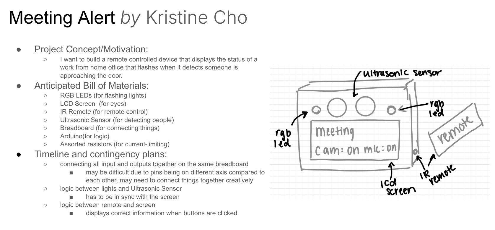
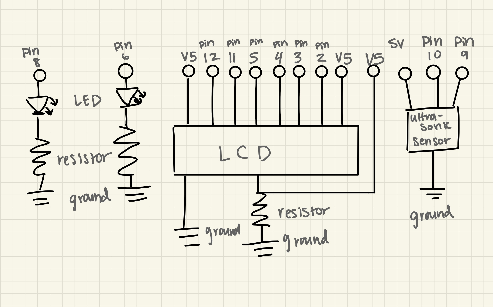

My prototype's purpose is to reduce unwanted interupptions during online
meetings and work time. I initially anticiated making a device that would
hang on the user's door and is controlled by a remote control, but when
thinking more about the idea, having a remote control the users may lose,
as well as the uncertainty of the remote possibly not working through the
door, I opted to use the p5 page where uses can connect their device to their
computer, to communicate with their device through their computer. This reduces
the fear of having to locate a remote control as well as adding more certianty
of the device working.
Circuit Image
This circuit contains an LCD screen, an ultrasonic sensor,
a red LED, and a green LED, and a potentiometer. The potentiometer
is used to adjust the brightness of the LCD screen. The LCD screen
is used to display the current mode of the meeting and whether the
user is able to talk or not. The ultrasonic sensor is used to detect
if someone is near the user's workspace. The red and green LEDs are
used to indicate whether the user is able to talk or not. The green
LED indicates that the user can talk, while the red LED indicates
that the user cannot talk. When someone is detected near the user's
workspace, both LEDs blink to alert the user of their presence.
The reason for the complicated circuit and wiring is due to fitting
all components into a box for the prototype. Without having the complicated
wiring, the lcd screen and ultrasonic sensor would not be able to face the
same direction, which is necessary for the prototype to function properly.
The LEDs are also placed in unconventional ways(not connected to the breadboard)
becaue if connected to the breadboard, they would not be visible from outside
the box as the breadboard lies fully inside the box.
Schematic

For the schematic, I have 2 leds connected to pins 6 and 8 with 220 ohm resistors.
The ultrasonic sensor is connected to pins 9 and 10. The LCD screen is connected
to pins 2, 3, 4, 5, 11, and 12. Though the schematic is very simple, the actual wiring
of the circuit is more complicated due to fitting all the components in the box with
the correct orientation for the prototype to function properly and as intended. All
components are powered by the 5V and pins throughout the arduino and also share the
same ground pin so there is no difference in voltage.
The purpose of this prototype was to create a device that would help users
to have less unwanted interupptions during meetings or during work time. Users can
choose a mode that will then inform visitors of the users availabilty to chat
without any verbal interupptions. Through the p5 page, the user can select
from 6 different modes using a dropdown menu.
The modes are as follows:
1. mic on, vid on - can talk
2. mic off, vid on - cannot talk
3. mic on, vid off - can talk
4. mic off, vid off - cannot talk
5. study time - can talk
6. locked-in time - cannot talk
When the user selects a mode from the dropdown menu, the LCD screen updates to
display the selected mode. Additionally, depending on the mode selected,
the red or green LED will turn on to indicate whether the user can talk or
not.
If the device detects someone is nearing the user's workspace, both red and green
LEDs blink to alert the user of their presence as well as bringing the detected
person's attention to the device. Additionally, a message "someone is here" appears
on the p5 web page to further alert the user in case their view of the person is
abstructed.
Arduino Code Snippet
// adding ultrasonic library
#include <Ultrasonic.h>
// definding which pins are used for ultrasonic sensor
Ultrasonic ultrasonic(10, 9);
// intitialized varaiable for distance as gabagoop
int gabagoop;
// imports LiquidCrystal library for screen
#include <LiquidCrystal.h>
// identifies what pins the lcd screen is connected to
LiquidCrystal lcd(12, 11, 5, 4, 3, 2);
// initializes pin 6 as green led
int green = 6;
// initializes pin 8 as red led
int red = 8;
// initializes mode as 1
int mode = 1;
int greenCount = 0;
int redCount = 0;
void setup() {
// sets baud rate to 9600
Serial.begin(9600);
// sets green led as output
pinMode(green,OUTPUT);
// sets red led as output
pinMode(red,OUTPUT);
// sets up where the lcd's number of columns and rows
lcd.begin(16,2);
// clears screen
lcd.clear();
// prints line "connect and"
lcd.print("connect and");
// moves cursor to bottom left
lcd.setCursor(0,1);
// prints "pick a mode"
lcd.print("pick a mode");
}
void loop() {
// sets gabagoop as read value from ultrasonic sensor
gabagoop = ultrasonic.read();
// prints gabagoop value into serial monitor
Serial.println(gabagoop);
// delays for .1 sec
delay(100);
// sets cursor to top left line
lcd.setCursor(0,0);
// works if there is feedback from p5 js code page
if (Serial.available() > 0) {
// sets mode value as the value received from p5 js code page
mode = Serial.read();
// sets mode to value received from p5 js code page using modeFind function
// if something is detected, calls freakout function
if (gabagoop <= 50) {
freakout();
}
modeFind();
}
}
// function that changes the screen and led used
// depending on which mode is selected
void modeFind() {
if (mode == 0) {
//clears screen
lcd.clear();
// prints message
lcd.print("pick a mode");
//changes lights to off
digitalWrite(red,LOW);
digitalWrite(green,LOW);
} else if (mode == 1) {
lcd.clear();
lcd.print("mic on, vid on");
// calls function speaknt
speaknt();
} else if (mode == 2) {
lcd.clear();
lcd.print("mic off, vid on");
speak();
} else if (mode == 3){
lcd.clear();
lcd.print("mic on, vid off");
speaknt();
} else if (mode == 4) {
lcd.clear();
lcd.print("mic off, vid off");
speak();
} else if ( mode== 5) {
lcd.clear();
lcd.print("study time");
speak();
} else if (mode == 6) {
lcd.clear();
lcd.print("locked-in time");
speaknt();
}
}
// function that blinks both red and green
// lights 3 times
void freakout() {
// lights both on
digitalWrite(red,HIGH);
digitalWrite(green,HIGH);
// wait to see change in led
delay(100);
// lights both off
digitalWrite(red,LOW);
digitalWrite(green,LOW);
// wait to see change in led
delay(100);
// lights both on
digitalWrite(red,HIGH);
digitalWrite(green,HIGH);
// wait to see change in led
delay(100);
// lights both off
digitalWrite(red,LOW);
digitalWrite(green,LOW);
// wait to see change in led
delay(100);
// lights both on
digitalWrite(red,HIGH);
digitalWrite(green,HIGH);
// wait to see change in led
delay(100);
// lights both off
digitalWrite(red,LOW);
digitalWrite(green,LOW);
// wait to see change in led
delay(100);
}
// function that turns the green led on
// and prints "can talk" on the second line
void speak() {
// turns on green led
digitalWrite(red,LOW);
// turns off red led
digitalWrite(green,HIGH);
// moves cursor to bottom left
lcd.setCursor(0,1);
// writes message
lcd.print("can talk");
}
// function that turns the red led on
// and prints "cannot talk" on the second line
void speaknt() {
// turns off green led
digitalWrite(green,LOW);
// turns on red led
digitalWrite(red,HIGH);
// moves cursor to bottom left
lcd.setCursor(0,1);
// writes message
lcd.print("cannot talk");
}
JS Code Snippet
// setting baud rate for serial communication
const BAUD_RATE = 9600;
// created variables prot and connectBtn
let port, connectBtn;
// created variable to hold size selection
let sizer = 1;
// created variable to hold last size sent
let lastSizer;
// fuction sets up the p5 page
function setup() {
// runs serial setup function
setupSerial();
// creates cacnvas the size of the window
createCanvas(windowWidth, windowHeight);
// p5 text settings, font verdana, size 50, bold, center aligned
textFont("Verdana", 50);
textStyle(BOLD);
textAlign(CENTER, CENTER);
// function thta makes dropdown menu
makeSize();
}
// function that runs in a loop that draws the p5 page
function draw() {
// sets the sizer variable to the corresponding value
btnData();
// sends data to arduino
sendData();
// get data from arduino
receiveData();
// writes information on p5 page
drawing(dist);
}
// function that makes dropdown menu for size selection
function makeSize() {
// Create a dropdown
mySelect = createSelect();
// location for dropdown menu
mySelect.position(windowWidth/2, windowHeight/2);
// adding mode options
mySelect.option('--------');
mySelect.option('mic on, vid on');
mySelect.option('mic off, vid on');
mySelect.option('mic on, vid off');
mySelect.option('mic off, vid off');
mySelect.option('study time');
mySelect.option('locked-in time');
}
// function that sets sizer variable based on dropdown selection
function btnData() {
// collect selected value
let s = mySelect.selected();
// set sizer variable based on selection
if (s === '--------') {
sizer = 0;
} else if (s === 'mic on, vid on') {
sizer = 1;
} else if (s === 'mic off, vid on') {
sizer = 2;
} else if (s === 'mic on, vid off') {
sizer = 3;
} else if (s === 'mic off, vid off') {
sizer = 4;
} else if (s === 'study time') {
sizer = 5;
}else if (s === 'locked-in time') {
sizer = 6;
}
}
// function that sends data to arduino
function sendData() {
// checks is lastSizer is different from sizer
if (lastSizer != sizer) {
// writes sizer value to console
console.log('writing:', sizer);
// writes sizer value to port
port.write(sizer);
// updates lastSizer to sizer value
lastSizer = sizer;
}
}
// function that receives data from arduino
function receiveData() {
// checks if port is open
const portIsOpen = checkPort();
// if not open, exit function
if (!portIsOpen) return;
// reads from port till new line
let str = port.readUntil("\n");
// is there is nothing, exit function
if (str.length == 0) return;
// trim the whitespace and convert the string to a number
dist = Number(str.trim());
}
// function that writes information on the p5 page
function drawing(d) {
// function that adds text if distance is less than or equal to 50 cm
if (d <= 50) {
textSize(100);
// displays someone is here message
text("someone is here", windowWidth / 2, windowHeight / 3);
// changes holder value to different value so the code
lastSizer = 1111;
// resends correct mode to arduino, this function is to make sure
// the mode is perserved even after freakout() function is relayed
sendData();
}
// text size to 75
textSize(75);
// displays mode message
text("choose your meeting mode", windowWidth / 2, windowHeight * 5/ 12);
}
//Serial connection
function setupSerial() {
port = createSerial();
// Check to see if there are any ports we have used previously
let usedPorts = usedSerialPorts();
if (usedPorts.length > 0) {
// If there are ports we've used, open the first one
port.open(usedPorts[0], BAUD_RATE);
}
// create a connect button
connectBtn = createButton("Connect to Arduino");
connectBtn.position(5, 5); // Position the button in the top left of the screen.
connectBtn.mouseClicked(onConnectButtonClicked);
// When the button is clicked, run the onConnectButtonClicked function
}
function checkPort() {
if (!port.opened()) {
// If the port is not open, change button text
connectBtn.html("Connect to Arduino");
// Set background to gray
background("gray");
return false;
} else {
// Otherwise we are connected
connectBtn.html("Disconnect");
background("purple");
return true;
}
}
function onConnectButtonClicked() {
// When the connect button is clicked
if (!port.opened()) {
// If the port is not opened, we open it
port.open(BAUD_RATE);
} else {
// Otherwise, we close it!
port.close();
}
}